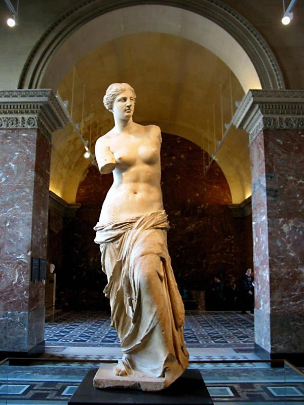
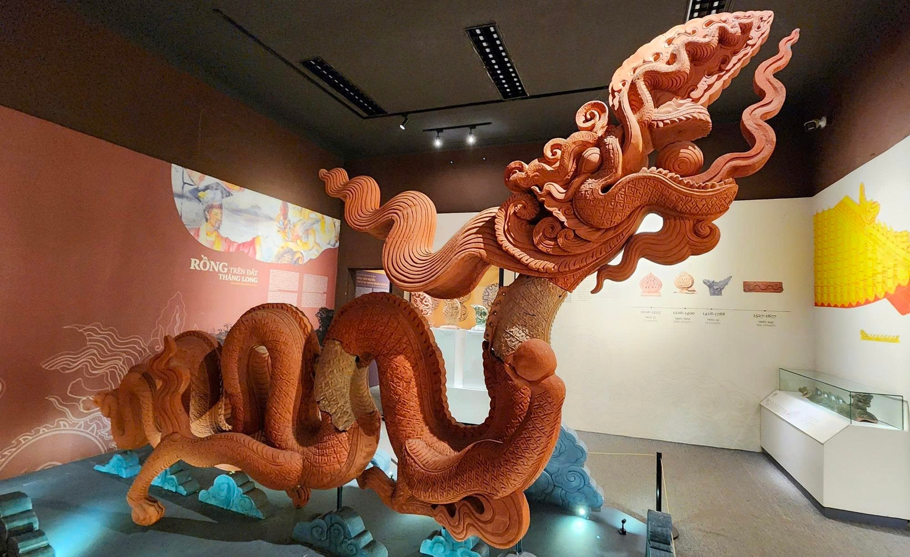

2. LỊCH SỬ PHÁT TRIỂN CỦA NGHỆ THUẬT ĐIÊU KHẮC
2.1. Điêu khắc thế giới
Thời tiền sử: Khắc đá, tạo hình trên vách hang động; đề tài săn bắn, hái lượm, nghi lễ và tín ngưỡng. Chất liệu chủ yếu là đá, đất. Ví dụ: phù điêu Venus ở Laussel.

Thời cổ đại – trung cổ:
- Ai Cập: Phục vụ thần linh, Pharaon và niềm tin vào thế giới bên kia; phong cách nghiêm trang, cân đối, mang tính quy phạm. Tác phẩm tiêu biểu: tượng vua Khafre, tượng bán thân Nefertiti, tượng Nhân sư Giza.
- Hy Lạp: Đề cao vẻ đẹp con người, tỷ lệ cơ thể và giải phẫu học; hình tượng cân đối, sinh động, tư thế đa dạng. Tác phẩm: Vệ nữ thành Milo, Nữ thần chiến thắng Samothrace, Vận động viên ném đĩa.


Thời Phục hưng (thế kỷ XIV–XVI): Kế thừa nghệ thuật Hy Lạp – La Mã, đề cao chủ nghĩa nhân văn và vẻ đẹp hiện thực; nghệ sĩ tiêu biểu: Donatello, Verrocchio, Michelangelo. Tác phẩm: tượng David.

Thời hiện đại: Đổi mới mạnh mẽ về hình khối, chất liệu và ngôn ngữ tạo hình; mở rộng đề tài từ con người đến các hình thức trừu tượng, đa chất liệu. Ví dụ: Những người tắm biển của Picasso.

So sánh Ai Cập – Hy Lạp: Cả hai đều gắn với kiến trúc và tôn giáo. Tuy nhiên, Ai Cập nhấn mạnh tính vĩnh hằng, quy phạm và sự tĩnh tại; Hy Lạp đề cao vẻ đẹp hình thể, tỷ lệ giải phẫu, tính chân thực và chuyển động.
2.2. Điêu khắc Việt Nam
Điêu khắc Champa: Phát triển mạnh từ khoảng thế kỷ VII–VIII; chịu ảnh hưởng văn hóa Ấn Độ và Hindu giáo, Phật giáo. Đặc trưng là phù điêu thần Siva, tiên nữ Apsara và tượng thờ gắn với kiến trúc tháp. Tiêu biểu: đài thờ Mỹ Sơn E1.

Thời Lý (1010–1225): Chịu ảnh hưởng sâu sắc của Phật giáo; phong cách mềm mại, thanh thoát, tinh tế. Hình tượng rồng thon dài, uốn lượn uyển chuyển. Tác phẩm: tượng A Di Đà chùa Phật Tích, rồng đá thời Lý.

Thời Trần (1225–1400): Mang tinh thần mạnh mẽ, phóng khoáng, khỏe khoắn; mở rộng điêu khắc lăng mộ với tượng người và tượng thú. Rồng có thân mập, đường nét chắc khỏe. Tác phẩm: tượng hổ lăng Trần Thủ Độ, tượng thú ở lăng Trần Hiển Tông.

Thời Lê Trung Hưng (1533–1789): Điêu khắc đình làng phát triển rực rỡ, kết hợp tín ngưỡng dân gian và tôn giáo; phong cách sinh động, hồn nhiên, phóng khoáng, đa dạng thủ pháp. Tác phẩm: tượng Quan Âm nghìn mắt nghìn tay chùa Bút Tháp, tượng Huyền Thiên Trấn Vũ đền Quán Thánh.

So sánh thời Lý – Trần: Cả hai đều gắn với kiến trúc, chịu ảnh hưởng Phật giáo và sử dụng các chất liệu như đá, gỗ, gốm. Điêu khắc Lý thiên về sự mềm mại, thanh thoát; điêu khắc Trần khỏe khoắn, dung dị, đồng thời phát triển mạnh ở không gian lăng mộ.
2.3. So sánh điêu khắc Việt Nam và thế giới
| Tiêu chí | Điêu khắc thế giới (đặc biệt phương Tây) | Điêu khắc Việt Nam truyền thống |
|---|---|---|
| Thẩm mỹ | Chú trọng tỷ lệ, giải phẫu, tính hiện thực; về sau mở rộng sang trừu tượng | Đề cao tính biểu trưng, ước lệ, cách điệu và sự hài hòa |
| Tư tưởng | Chủ nghĩa nhân văn, thần thoại, tôn giáo và tư duy khoa học | Phật – Nho – Đạo kết hợp tín ngưỡng bản địa |
| Kiến trúc | Có tượng gắn với công trình và tượng độc lập tại quảng trường, bảo tàng | Gắn bó chặt chẽ với đình, chùa, đền, miếu và lăng mộ |
| Chất liệu | Đá cẩm thạch, đồng, thạch cao và nhiều chất liệu hiện đại | Gỗ, đá, đất nung, gốm, đồng |
| Đề tài | Thần thoại, tôn giáo, anh hùng, lịch sử và hình khối trừu tượng | Tượng thờ, linh vật và sinh hoạt dân gian |
| Phát triển | Từ nghệ thuật cổ điển đến Phục hưng, Lập thể, Tối giản và đương đại | Từ nghệ thuật truyền thống đến tiếp biến kỹ thuật phương Tây và điêu khắc đương đại |
Điểm giống nhau: Đều sử dụng khối và không gian ba chiều để biểu đạt tư tưởng, tình cảm; phản ánh đời sống văn hóa, tín ngưỡng và trình độ kỹ thuật của từng thời kỳ.
Tiểu kết: Lịch sử điêu khắc thế giới và Việt Nam phản ánh sự vận động của tư duy thẩm mỹ qua các thời đại. Nếu điêu khắc phương Tây nổi bật với truyền thống nghiên cứu giải phẫu và những cuộc cách mạng về hình khối, điêu khắc Việt Nam gây ấn tượng bởi tính biểu trưng, sự gần gũi với đời sống dân gian và mối quan hệ mật thiết với kiến trúc tâm linh. Quá trình giao lưu, tiếp biến văn hóa đã góp phần làm phong phú ngôn ngữ tạo hình mà vẫn tạo điều kiện duy trì bản sắc riêng của mỗi nền nghệ thuật.